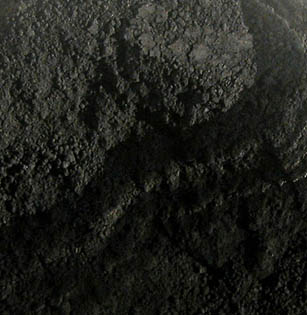
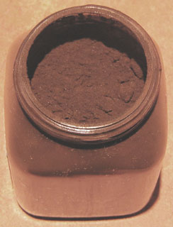

Les
noirs
English version

[Lectures conseillées :
Le
noir dans la langue française, Pourpre.com
La
couleur
noire, Pourpre.com]
On rencontre quelques peintres qui signalent des difficultés avec
les couleurs noires en tubes utilisées en sous-couches. Si la
quantité d'huile adjointe par le fabricant est trop importante, il faut
simplement respecter un temps de séchage plus long.
Il semble qu'il y ait peut-être, à l'origine de ces rumeurs, une
confusion entre noirs carbonés et noir animal,
confusion reproduite par certains fabricants de tubes américains, sans oublier certains auteurs
européens par ailleurs excellents, qui assimilent à tort noir
d'ivoire ou d'os avec noir animal. Le noir d'ivoire n'est pas
particulièrement porteur d'oxygène ni d'osséine.
Que dire du noir de vigne qui par nature ne peut contenir d'osséine ?
Tout cela semble bizarre. Le noir n'est pas la seule couleur à se voir
attribuer des facultés particulières : d'autres couleurs sombres sont dans
le même cas. S'agit-il d'un problème de tradition mal transmise
ou tout simplement de vision, se posant dans ces cas-là avec
davantage d'acuité ? La réponse à cette question s'élaborera peu à peu, à
la mesure des test que nous effectuerons, des témoignages
que nous recueillerons. Pour l'instant, il est hors de question que nous
reprenions à notre compte les déplorables rumeurs sur ces couleurs
majestueuses alors que l'expérience nous invite à ne pas le faire.
Il existe au moins trois types d'emplois des noirs :
-
l'emploi
pur
-
la
synthèse de noirs
-
l'emploi
combiné du noir et d'autres couleurs
Les noirs purs
Ce sont :
[Les noirs animaux]

* le noir d'ivoire
et d'autres noirs produit par calcination
d'os animaux dégraissés et blanchis, ont été utilisés, selon les sources
d'informations soit en Grèce antique voire dans la Chypre préhistorique
(3 000 BC selon François Perego) soit dans l'Égypte de l'Ancien Empire, donc
quelques siècles plus tard.
D'autres peuples ont pu s'en servir depuis des temps au moins aussi anciens.
Le noir d'ivoire véritable (l'elephantinum de Pline) n'a été
utilisé qu'assez rarement au cours de l'histoire, et pour cause : l'ivoire
d'éléphant est coûteux, mais aussi fort apprécié à l'état brut, blanc
cassé. Il faut
avoir de sérieuses bonnes raisons pour calciner à grand peine un matériau
simple qui a déjà une certaine valeur.
Ainsi, fort heureusement, aucun cimetière d'éléphants n'est exploité pour
produire ce pigment, quoiqu'en disent certains auteurs décidément très mal informés.
En fait, on ne distingue depuis longtemps le noir d'ivoire du noir d'os
que par la qualité de pigments obtenus avec d'autres animaux. L'espèce
n'est d'ailleurs pas le seul critère de qualité car les méthodes de
fabrication donnent des résultats variés.
D'après François Perego, ces noirs
contiendraient 10 à 20% de carbone et le reste serait "inorganique" (un
sens particulier de ce mot),
principalement des sels de calcium dont un carbonate (information non
recoupée), c'est-à-dire une chaux carbonatée, de la calcite. Le fabricant pourrait - toujours
selon F. Perego - modifier le rapport carbone/"inorganiques" par différents
procédés afin d'obtenir un noir plus ou moins profond.
Le noir d'ivoire ordinaire est en général chromatiquement neutre quoique très discrètement chaud,
mais la variété des animaux utilisés et les méthodes de fabrication
peuvent donner d'autres colorations.
Il est normalement très permanent, stable dans les
mélanges, très couvrant contrairement à ce que diverses sources affirment
contre toute évidence, et fort colorant. Il est réputé peu siccatif, mais à tort :
il se conduit parfaitement bien et même beaucoup mieux que certains
pigments dont la réputation est meilleure. Ne pas parvenir à une pâte
correctement siccative avec ce pigment remarquable serait très surprenant et
pourrait résulter d'une fort mauvaise fabrication ou d'une contrefaçon.
La photo ci-dessus représente
un noir d'ivoire. Le contraste, la saturation et la luminosité de
l'image ont été très accentués pour laisser percevoir quelques nuances
chromatiques.
Le noir d'ivoire est une référence pigmentaire de tout premier ordre.
Anecdote : "Un noir chaud qui bleuit ?",
ci-dessous
Lecture conseillée :
Le
noir d'ivoire sur Pourpre.com
* le noir d'os, produit avec
les os dégraissés de mouton
calcinés ou d'autres animaux. De mauvaise qualité, peu couvrant et peu colorant, il a pratiquement disparu des
palettes. On peut transformer un noir d'os en noir d'ivoire (entendre par là
un noir de meilleure qualité) mais le procédé fait intervenir un produit et
une manipulation dangereuse.
*
le noir de bois de cerf. Les
andouillers râpés et calcinés ont été utilisés sur tout le continent
eurasien. La poudre de bois de cerf calcinée est possiblement encore utilisé
en Asie dans certains procédés secrets comme la fabrication de l'encre de
Chine.
*
le noir de
rhinocéros. En Chine, on a largement utilisé la poudre calcinée de
la corne de ce malheureux animal. Elle autorise, c'est vrai, de très somptueux
dégradés gris.
*
le noir de laine. Utilisé dans l'Orient
musulman ancien, il aurait été produit par calcinations répétées de la
laine située sur la queue du mouton, ajoutée de sel (source de l'information :
Anne Varichon). Il aurait donné une
encre.
On mentionne aussi la laine
des dromadaires noirs, teintée sans calcination préalable à l'aide de
pigments ferreux et autres substances tinctoriales sombres.
*
les autres noirs d'origine animale. En
Afrique notamment, les peaux de toutes sortes d'animaux ont été calcinées,
souvent en association avec des oxydes de fer.
Il
faut aussi mentionner la sépia, qui donne bien un noir lorsqu'elle n'est
pas diluée. Lire l'article consacré à cette substance.
Enfin, on travaille depuis quelque temps sur les spécificités
exceptionnelles d'un "noir ultime" (dit ultrablack), découvert initialement
sur les ailes d'un papillon. Ce noir est un métamatériau, pas un pigment.
Détails dans un passage du
chapitre XI des Dialogues de Dotapea, Les métamatériaux.
[Les noirs végétaux]
*
le noir de pêche, produit traditionnellement
par la calcination de noyaux de pêches, d'abricots, de cerises ou d'écorces
d'amandes, fortement permanent. Il est de nuance chaude, légèrement rouge.
C'est aujourd'hui un mélange de noir d'aniline
et de terres qui a fait gagner à cette substance un caractère couvrant
qu'elle n'avait pas auparavant (selon des sources sérieuses quoique non
confirmées expérimentalement par nous).
*
le noir de vigne (dit au Moyen-âge nigrum
optimum, "le meilleur des noirs"), fabriqué par combustion de
jeunes pousses de vigne. Bleuté et splendide selon Cennini, il ne nous
semble pas, dans les faits, présenter des caractéristiques si spectaculaires. Cela est peut-être dû aux
procédés de fabrication actuels ou à leurs provenances. Certains peintres parmi nous confirment
en effet qu'il présente bien un aspect bleuté mais ils indiquent que
celui-ci a tendance à s'atténuer au séchage. D'autres expériences
seront réalisées.
*
Le
noir de campêche. Lire le
texte sur le bois de campêche dans l'article consacré aux violets et aux mauves.
*
Le noir de noix de galle. La noix
de galle est une excroissance du chêne due à la présence de la larve d'un
insecte parasite (cynips). Bourrée de tanin noir vaguement brun, connue au
moins depuis 2500 BC (Égypte), elle a été utilisée en teinture, en peinture
et en écriture, notamment au Moyen-âge en Occident où, associée au fer, elle
a donné une "gallo-tannate de fer" très permanente,
encre très employée bien que coûteuse et difficile à réaliser (on mentionne
donc évidemment des contrefaçons). L'association avec cet élément a
persisté durablement, y compris en teinturerie.
Elle
fut l'objet d'un fructueux commerce car elle était la seule substance
produisant teintures et encres noires vraiment permanentes. La zone de
production était assez vaste. Il s'agissait principalement d'une région
syro-anatolienne très élargie, tout le pourtour méditerranéen oriental
produisant également la noix de galle pour une utilisation locale.
Comme
teinture, la noix de galle est particulièrement difficile à utiliser. Colorant
substantif, elle a
en elle-même des propriétés de mordant
(elle fut parfois purement utilisée en tant que telle) pouvant la rendre
corrosive lorsqu'elle est trop concentrée.
Son
utilisation n'a pas cessé d'être intensive et a même connu une apogée en
Occident au XVIIIème siècle (âge de la maîtrise pour de
nombreuses teintures). Les adjuvants et procédés de teinturerie relevaient
alors d'une chimie complexe, aguerrie.
Une
variété japonaise de la noix de galle aurait été utilisée à l'époque
médiévale.
*
le noir de fumée et le
noir de suie. Ils désignent plus un
procédé qu'une matière précise. Il se sont imposés pendant la préhistoire,
l'Antiquité et au-delà. Pigments pour la peinture comme pour l'écriture et
les teintures, il seraient les produits
* de la calcination de différentes substances résineuses,
oléagineuses, ou d'empois
dont le résidu serait recueilli au-dessus de la flamme. Fabriqués de
cette manière, ils sont plus particulièrement employés en peinture. On
les désigne couramment sous l'intitulé de "noirs
de suie". Lire
passage in Les dialogues de Dotapea, chap. I, A propos des liants.
* de la calcination
du bois d'un pin, le pinus teda, particulièrement employé dans ce cas pour
l'écriture. D'autres substances ligneuses peuvent être employées. Ces
noirs sont couramment nommés "noirs de fumée"
- appellation impropre car c'est toujours de suie qu'il s'agit, mais le terme
fait référence.
Dans un cas comme dans l'autre, ces substances seraient couvrantes et colorantes,
voire même liantes pour certaines d'entre elles (voir
bistre) mais nous n'avons pas encore pu les tester. Nous ne nous
attarderons pas sur la réputation que la rumeur leur a donnée
concernant leurs caractéristiques de siccativation en utilisation avec les
huiles à peindre tant ladite rumeur semble systématiquement injuste dès lors qu'il s'agit de
pigments noirs. Leur aspect gras pourrait être à l'origine de cette
opinion. Pour cette raison, certains auteurs insistent sur la difficulté de les
incorporer aux peintures à l'eau et proposent des remèdes "costauds"
: détergents et alcool à brûler... Nous réservons pour plus tard une appréciation plus
expérimentale et plus objective, d'autant plus que les suies
végétales et proprement oléagineuses n'ont vraiment pas le même comportement.
Selon certaines sources, le noir de fumée (pin) serait de meilleure qualité
lorsqu'il est fortement carboné.
Il a la réputation d'être généralement bleuté (contrairement au
noir de suie, plutôt brun), mais toutes les
suies ne se ressemblant pas, nous ne serons pas plus affirmatifs sur ce point.
En teinturerie, il figure parmi les colorants les plus misérables tandis que le
noir de suie afficherait une tenue correcte.
Égyptiens,
Grecs et Romains utilisèrent les deux variétés (lire Encres
diverses). On trouve aussi le noir de fumée à Ajanta (Dekkan, Union Indienne, IIème
siècle BC - VIIème AC).

L'encre de Chine serait fabriquée avec un
noir de fumée très
particulier (lire l'article consacré à l'encre de
Chine).
Toujours en Chine, on a utilisé les dépôts calcinés situés sur le
bas des
marmites (côté flamme, à l'extérieur) pour réaliser certains dessins et
motifs d'importance traditionnellement mineure (cerf-volants notamment). Ce noir
est dit "noir de marmite". On mentionne l'emploi de substances
équivalentes en Afrique Centrale et dans la culture berbère, mais, dans ce
cas, à des fins de tatouage.
Sur
tous les continents et même sur la banquise, le noir de fumée serait le pigment
le plus utilisé pour les tatouages traditionnels.
Variantes de noirs de suie :
* le bistre (voir texte in Encres
diverses) est fabriqué à l'aide de suie.
*
le noir de lampe
est une autre appellation du noir
de suie (voir ci-dessus). Il pourrait s'agir d'un anglicisme.
*
le noir de carbone
- un nom qui en dit long ! -, fabriqué de différentes manières, est une
version industrielle.
* le
noir obtenu par pyrogravure. C'est une variété un peu particulière de
noir végétal. Il s'agit en effet de calciner du bois, la plupart du temps. Ce
procédé n'a rien de contemporain. Il a été utilisé par diverses
civilisations maîtrisant suffisamment la métallurgie. Avec un métal chauffé
au rouge, on trace des motifs sur la surface. Mais on peu aussi carboniser
intégralement des objets, plus ou moins superficiellement et pour cela, aucune
technique précise n'est requise.
Aujourd'hui,
on peut utiliser des pyrograveurs électriques pour traiter d'autres supports
que le bois.
*
les autres noirs végétaux.
Les écorces de saule, de hêtre, d'ébène, de daphné, de lianes, d'acacia,
voire de fruits comme la grenade, l'amande ou la noix de coco - tous riches en tanin, réagissant avec les
oxydes métalliques, ce qui explique la pratique très courante de bains de boue
ou de vase -, les noyaux de prunes, de pêches ou de cerises, les gousses de gommiers et les racines de chênes
sauvages, le plus souvent calcinés, ont été employés sur les différents continents
de la planète. Les teintes obtenues varient en fonction des essences
végétales.
Dès la préhistoire,
ce genre de noirs, à base de végétaux calcinés parfois mêlés à des graisses
animales, a été utilisé pour la peinture pariétale. Parallèlement, tout au long de
l'histoire, le bois brûlé (non lié à une graisse) tout comme le fusain actuel
ont autorisé des
corrections, donc des travaux d'ébauche, d'esquisse
et de croquis (lire l'article
consacré aux dessins préparatoires). Les exemples d'emplois dans des
domaines variés, à toutes les époques et dans toutes les régions du monde -
y compris le Grand Nord - sont innombrables. L'usage conjoint d'un liant
permit d'obtenir, dès le paléolithique dans certains cas, de véritables peintures.
Mentionnons
enfin l'emploi, non sans importance,
* du
noir de lie de vin
calcinée dans l'Égypte du Fayoum. Il s'est bien conservé, mais dans des
conditions exceptionnelles il est vrai. Voir lie.
* du noir de vin, utilisé par les Étrusques conjointement au noir
de vigne, il est issu de la calcination du marc de vin (lire l'article
marc du glossaire, acception 1).
* des
feuilles de châtaigner,
séchées ou non (et éventuellement l'écorce et les bogues des châtaignes,
également colorantes). Naturellement, ces éléments donnent des
dégradés allant du jaune impur au brun le plus foncé. Adjoints d'oxydes de
fer, ils produisent des noirs et des gris. Au XIXème siècle, ils
furent associées en sous-couche ou en sur-couche avec le bois
de campêche pour former de véritables noirs. Ils ont aussi été
utilisées en tannerie. La moitié du XXème siècle voit survenir
le début du déclin de l'exploitation des feuilles de châtaigner.
Les
rameaux peuvent être utilisés en décoction comme mordants,
apportant cependant une coloration jaune. Les cendres donneraient par contre
de très bons résultats.
La
culture du châtaignier est pratiquée en Europe, en Afrique du Nord et en
Amérique du Nord.
* du brou
de noix. Lire la page consacrée à ce produit.
[Les noirs minéraux]
*
les noirs de vase. Ils ont surtout été
utilisés en teinturerie par de nombreux peuples. La longévité de ces
procédés est assez faible de toutes manières. Délayés, les noirs de vase
donnent des teintes variées (gris, verts, bruns). Certaines vases ont aussi des
propriétés de mordants. Quelques
peintres travaillant avec des terres naturelles se servent occasionnellement de
cet élément dont la composition peut varier considérablement.
Les
vases marines les plus pures sont draguées autour des îles Chausey, au large
de Granville (Manche, France) mais nous ne savons pas si elles peuvent être
employées en peinture ou en teinturerie. Nos sources d'informations ne
mentionnent que des vases non salines.
Ce
qui caractérise les vases, ce qui leur a valu un emploi dans le monde entier,
c'est en premier lieu le fait qu'elles contiennent des oxydes métalliques (voir
Les autres noirs végétaux).
Nous conseillons donc aux "curieux de la vase" de faire analyser préalablement des
échantillons des produits prélevés afin de déterminer le traitement qui peut
éventuellement être appliqué.
*
le noir de Mars ou noir de fer, un oxyde de
fer naturel ou synthétique,
très utilisé en peinture acrylique mais aussi en peinture à l'huile
et autres procédés. Peu couvrant et peu colorant selon certaines sources, il compte en
réalité parmi les substances les plus couvrantes et
les plus colorantes, comme tous les oxydes ferreux purs. Il est très
légèrement froid.
En peinture décorative, il présenterait aussi
certaines vertus en tant qu'enduit antirouille.
C'est une référence notoire au même titre que le noir d'ivoire, bien
qu'il se comporte différemment.
*
le noir de manganèse. C'est un oxyde
du manganèse. Il semble extrêmement rare. Il
aurait notamment été utilisé dans le passé par les aborigènes australiens.
*
le khôl. Lire l'article
du glossaire.
* le noir de Prusse. C'est un
bleu de Prusse calciné, très peu employé.
*
la terre
de Cassel. Elle n'est pas une terre au sens strictement
minéral du terme.
Son origine est végétale : il s'agit d'une lignite (charbon de bois, riche
en carbone à hauteur de 70%). C'est un noir très
chaud. Il passe pour fugace mais nous n'avons pas du tout constaté ce
défaut, loin s'en faut.
Ce pigment est nettement moins couvrant que les
noirs d'ivoire ou de Mars et autorise, pour cette raison, de très intéressants dégradés de
gris brunâtres même sans adjonction de blanc (par simple dilution). Pour
cette raison, il a été employé dans la fabrication de substituts du brou de
noix.
Une "variante" de la terre de Cassel serait une terre d'ombre particulière,
celle de Nocera Umbra (lien).

*
le
bitume (voir photo d'un pot de bitume de Judée ci-contre).
Extrait sur des sols couvrant des nappes de pétrole, il a connu deux périodes
glorieuses :
* dans l'antiquité
moyen-orientale, il était une importante source de production de pigment noir
*
à la fin du XIXème siècle, il fit une apparition remarquée, peu
avant que les peintres découvrent le comportement
catastrophique de ce
colorant, surtout en peinture à l'huile. Il ne sèche jamais et traverse
les couches de peinture, occasionnant des craquelures épouvantables ! Le Radeau de la Méduse en aurait fait les
frais.
Une imitation créée dans une
gamme d'huiles extra-fines a donné lieu à
une laque de bitume de bonne
tenue. Le bitume de Judée n'est utilisé aujourd'hui qu'en gravure et en
ébénisterie. A ce sujet, lire l'article
du glossaire.
Lecture conseillée :
Le
bitume sur Pourpre.com
Lire
aussi passage in Le craquelé.
*
les noirs du tiers-monde. En
Afrique et dans l'Australie des aborigènes, on utilise les substances composant
les batteries et les piles pour la peinture décorative et les fonds d'oeuvres
artistiques. Bien souvent, ces produits contiennent des métaux lourds.
La synthèse de noirs
Synthèse organique
Mentionnons pour le moment un noir d'aniline
qui n'a pas mauvaise presse.
Lecture
conseillée :
le noir d'aniline sur Pourpre.com.
Synthèse en mélange
Avec l'aquarelle, créer un noir est aisé : il suffit de combiner un
bleu sombre (du gris de Payne à
l'outremer foncé) avec une terre brune (de la
Sienne brûlée à la terre d'ombre brûlée en passant par
l'ombre naturelle). La
même combinaison en peinture à l'huile, est toujours un peu plus malaisée. Il
est difficile de ne pas obtenir un gris mais certains peintres y parviennent.
D'autres partent d'une base violacée très sombre obtenue par mélange de bleus
sombres et de rouges froids.
En peinture à l'huile ou acrylique, souvent, le plus beau noir se révèle à la longue,
après application de nombreux glacis par exemple.
Les noirs présynthétisés existent. Mentionnons tout particulièrement la
TEINTE NEUTRE, sorte de noir employé en aquarelle. Sa composition est
typiquement un PBk + un PR +
un PB (voir nomenclature pigmentaire). Elle donne
donc généralement une teinte violacée parfois exagérée. Le
terme 'neutre' pourrait référer à la réputation du violet, ni froid, ni
chaud selon certains (alors que d'autres le considèrent comme froid). Il serait
en effet excessif d'affirmer qu'un rouge adjoint d'un bleu donne une teinte
neutre chromatiquement parlant car il ne s'agit en aucun cas de complémentaires.
Teintures noires
anciennes
Dans le domaine des procédés de teinture du passé, le noir, toujours
difficile à obtenir, a notamment été produit par passages successifs dans
différents bains de couleurs plus ou moins complémentaires. Cependant, cette
pratique a été durablement interdite en Occident pour des raisons religieuses
(voir Techniques de mélange de couleur).
Les noirs combinés
à d'autres couleurs
Ce type de combinaisons est une approche qui fait partie des procédés les plus
représentatifs de la subtilité de la peinture à l'huile et à l'acrylique. Les noirs
bleutés d'avance ou les noirs chauds prêts à l'emploi ne sont pas forcément
préférables ni supérieurs aux synthèses opérées par de nombreux peintres
qui ont créé leur "noir corbeau"
(un terme récurent) à l'aide d'un noir d'ivoire mêlé de
bleu et parfois d'un blanc froid, ou bien leur "noir chaud", emprunt de rouge,
leur "noir neutre" violacé, etc.
Il existe un mélange donnant des résultats très différents, semblant
irréels : le noir avec le jaune. Il donne des verts somptueux, inattendus, beaucoup
plus riches que la combinaison jaune+bleu.
Toxicité
Les noirs recelant du carbone pourraient être cancérigènes
par contact fortement répété avec la peau (information absolument pas confirmée).
Un noir chaud qui bleuit
?
Certains auteurs affublent le noir d'ivoire de la capacité de former des
bleus en emploi avec un blanc acrylique ou autre, en solution aqueuse. Nous
avons maintes fois constaté l'effet contraire : ce noir produit un gris plutôt
neutre mais très, très légèrement brun, certainement pas bleu. Peut-être la
composition moléculaire du noir et du blanc peuvent-elles jouer un rôle
suffisamment réactif dans la combinaison pour produire le résultat annoncé.
Autre possibilité : c'est le blanc qui serait bleuté. Un titane, par exemple,
peut avoir différentes teintes en fonction du matériau employé pour l'enrober (lien).
Nous n'avons jamais constaté ce bleuissement et quand bien même on le
constaterait, la variété des
procédés de fabrication de ce noir ne permet pas, de toute façon, d'établir une
véritable norme
chromatique. L'existence de spécimens vaguement bleutés n'est pas de l'ordre de
l'impossible, on le sait. On peut juste dire qu'en achetant un tube de ce noir
et en y ajoutant un blanc quelconque, sauf miracle, on n'obtient pas un bleu,
cela est un pur fantasme.
Dans des cas beaucoup plus particuliers, ce "miracle" peut quand même
peut-être survenir. Le bleuissement est en effet mentionné pour un autre couleur
où une substance d'origine osseuse pourrait avoir été employée conjointement à
un blanc. C'est l'ocre bleue de Degottex dont il est question dans le chapitre X
des Dialogues de Dotapea. Lire un passage ici.
Ou tout l'article. Mais en aucun cas il ne
s'agit de pigments ordinaires. C'est une réaction chimique dont l'existence
n'est à cette heure même pas confirmée, encore moins expliquée et reconstituée,
à défaut d'analyse des éléments en présence.
Retour
début de page